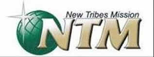

The Beginnings
Both Jacob and I have felt for a few years now that God has very clearly called us to overseas mission work. We have seen God work in amazing ways to reaffirm this call on our lives, and after much research on what type of mission work we would pursue, we settled on an organization called New Tribes Mission. New Tribes works to plant churches in tribal communities. There are currently 6,500 people groups around the world, 2,500 of which are still unreached with the word of God. We are so excited to be joining a mission that works in this capacity, and we know that God has done amazing things through New Tribes.
Where We Are Now
We just finished a year of Bible training in Michigan! It was an incredible year of learning, challenges and many good missionary friends were made. We are now back in Connecticut.
Where We Are Headed
We are so excited about where we feel God is leading us in our next steps! Jacob needs to complete an internship in a different cultural context to finish off his master’s degree. As we did some praying and searching, we discovered New Tribes has a church planting internship in Papua New Guinea. This was a huge opportunity for us as this is exactly what we hope to commit our future to! We have been told by many missionaries that if we have the opportunity to visit a country where church planting is happening, to take it! We see this trip as an essential step in our training towards full time missions.
The Papua New Guinea and Indonesia areas are a huge focus for New Tribes. There are still many thousands of languages to be learned. New Tribes has received notice of tribes begging for missionaries because they see the difference in neighboring tribal communities where the gospel has been presented. Instead of living in constant fear, their neighbors have a new hope.

The Internship
There are many things we will be doing on our internship but we just wanted to share a few highlights with you. First, we will go through an orientation and language learning process where we will learn some Melanesian Pidgin (the national language of Papua New Guinea). We will learn how to gather culture information and how to analyze it. We will be learning how to teach illiterate people how to read and write in their own language, as well as some of the basic principles of Bible translation- specifically how to translate the Bible in a way tribal people can understand in their cultural context. One of the parts of the trip we are MOST excited for will be spending time in an early church development- basically visiting a tribe where church planters are still in the process of learning language and culture in order to share the word of God. We will also visit a mature, indigenous tribal church where we will get to see firsthand the results of church planting and worship with our tribal brothers and sisters in Christ!
We are hoping to go to Papua New Guinea at the end of JULY!! This internship opportunity is ideal for us as this is the type of work we hope to commit our future to.
Our Future
The next step for us after we return from the internship in October is to begin full time missionary training at the New Tribes Missionary Training Center in Missouri. The program is two years in length where we are intensively trained in a range of skills including linguistics, cultural studies, and some medical skills. We are hoping to head to the Training Center Fall of 2016.
About New Tribes

In 2,500 of the world’s 6,500 people groups, there is no church, nor is there any work being done to establish a church. These are the people among whom NTM works.
These tribes’ cultures and languages have isolated them from the Gospel. Missionaries must learn their language and understand their culture in order to clearly present the Gospel and effectively plant a church.
Unreached people groups have no concept of the God of the Bible. So Bible teaching begins at the same place God began with His chosen people: at the beginning. Chronological Bible teaching presents a foundation for understanding Jesus’ death and resurrection.
Following the pattern seen in Acts as God’s people carried out the Great Commission, missionaries seek to establish mature churches that can take their rightful place as agents of change in their own communities and partners in the Great Commission. Learn more here